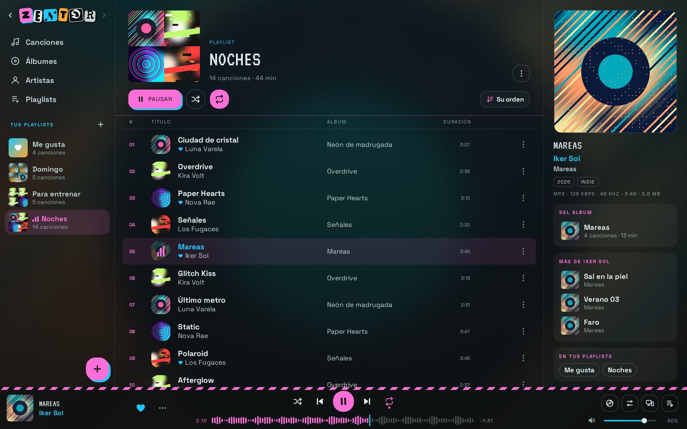
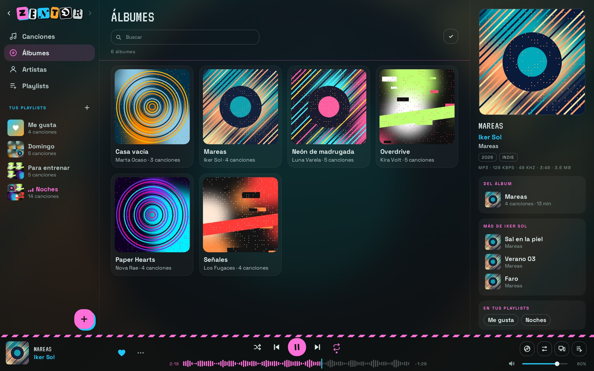
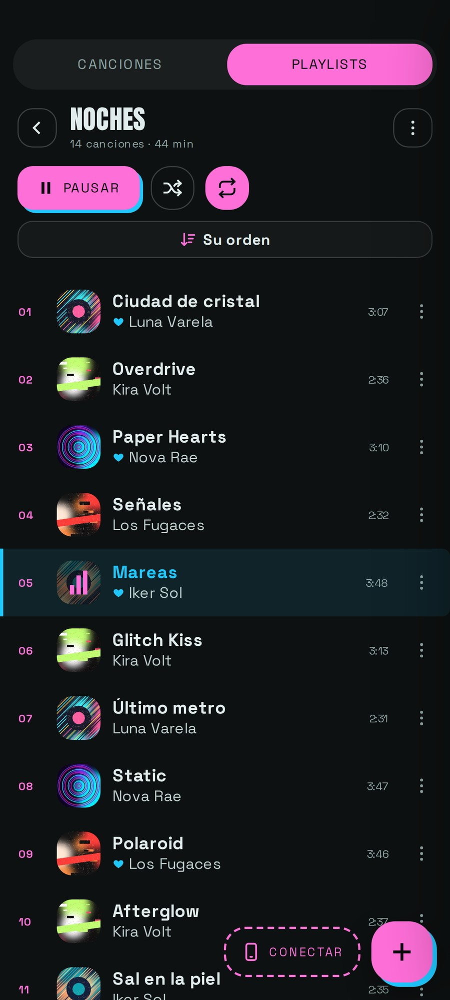
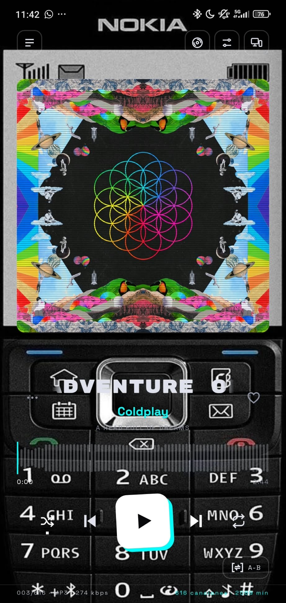

Qué hace
Modo DJ
Analiza cada canción (tempo, tono, energía, estribillos) y las mezcla en el mejor momento: cambio de graves, filtros, bucles, parada de cinta… Tú eliges cuáles y con cuánta fuerza.
YouTube y Spotify
Pega un enlace o busca por nombre, escúchala y descárgala para tenerla sin internet. De Spotify, si ya la tienes suena la tuya.
Suena mejor
Ecualizador, refuerzo de graves, «Mejorar sonido» para auriculares baratos, igualar volumen y finales suaves sin cortes.
Aleatorio inteligente
Pone la que mejor va después y, de vez en cuando, una parecida de YouTube. Cuando se acaba la lista, sigue con música parecida.
PC y móvil juntos
Escanea un código y se sincronizan las playlists, los Me gusta y la música, sin cuentas ni nube. Controla desde uno lo que suena en el otro.
A tu gusto
Temas, colores, fondo, letras, iconos y efectos. En español, inglés y catalán. Con estadísticas y tu propio Wrapped.
Así se ve







Las canciones, artistas y portadas de las capturas de PC y de las dos primeras del móvil son inventados; las dos últimas son del móvil de Kilphys.
Cómo empezar
- Descarga el instalador y ábrelo. Elige la carpeta, si quieres un icono en el escritorio y que se abra al encender el PC. Si Windows avisa («Windows protegió su PC»), pulsa Más información › Ejecutar de todas formas: pasa con cualquier programa pequeño sin una firma de pago.
- Tu música aparece sola: MixUp lee tu carpeta Música. Para añadir más, arrastra canciones a la ventana o búscalas con el botón +.
- Dale al play y, si te apetece, al disco de arriba: el modo DJ mezcla las siguientes él solo.
¿Prefieres no instalar nada? La versión portable funciona desde cualquier carpeta o un USB: la música y los ajustes van en el propio USB.
App para Android
La misma app en el móvil: tu música, el modo DJ, YouTube y el ecualizador, con controles en la notificación y en la pantalla de bloqueo. Sigue sonando con la pantalla apagada.
- Descarga MixUp.apk (con el QR o el botón) y ábrelo. Si Android lo pide, activa Permitir de esta fuente.
- Si Play Protect avisa, pulsa Más detalles › Instalar de todas formas: es porque no viene de Google Play.
- Para juntarlo con el PC: en el PC, Ajustes › Este PC › Conectar un móvil, y escanea el código desde la app.
¿Es seguro?
Sí. Windows y Android pueden decir que es «peligroso» porque no está firmado con un certificado de pago ni viene de una tienda, no por lo que hace. Todo el código está abierto en GitHub y los instaladores los compila GitHub a partir de él. No tiene cuentas ni anuncios, y no manda tus datos a ningún sitio.
Si quieres comprobarlo, sube el archivo a VirusTotal (lo pasa por más de 70 antivirus).
Novedades
Cargando versiones…
Todas las versiones
Puedes descargar cualquier versión anterior. Tu música, playlists y ajustes se conservan al cambiar de versión.
| Versión | Fecha | Instalador | Portable | Android |
|---|---|---|---|---|
| Cargando… | ||||
Acerca de
¡Buenas! Soy luckicla y hago MixUp. Empezó como ZenTor, un reproductor para escuchar mi música en un pendrive sin instalar nada, y ha acabado siendo un reproductor completo para PC y Android.
Lo hice sobre todo para Kilphys, la persona por la que este proyecto existe. Gracias por todo.
Es gratis y de código abierto para uso no comercial. Si algo falla o se te ocurre una idea, dímelo en GitHub.
Parte del proyecto lo he hecho con ayuda de IA (Claude, de Anthropic).